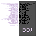

|

|
Ted Warnell
Book of Job
1 November 2000
.רמשת תוליא ללח | ;עלס~ילעי תדל ,תע--תעדיה [א,טל] .הנתדל
תע ,תעדיו | ;הנאלמת םיחרי רפסת [ב,טל] .הנחלשת םהילבח | ;הנחלפת ןהידלי ,הנערכת
[ג,טל] .ומל ובש~אלו ,ואצי | ;רבב וברי ,םהינב ומלחי [ד,טל] .חתפ ימ ,דורע תורסמו
| ;ישפח ארפ חלש~ימ [ה,טל] .החלמ ויתונכשמו | ;ותיב הברע יתמש~רשא [ו,טל] .עמשי אל
,שגנ תואשת | ;הירק ןומהל ,קחשי [ז,טל] .שורדי קורי~לכ רחאו | ;והערמ םירה רותי [ח,טל]
.ךסובא~לע ,ןילי~םא | ;ךדבע םיר הבאיה [ט,טל] .ךירחא םיקמע דדשי~םא | ;ותבע םלתב
,םיר~רשקתה [י,טל] .ךעיגי וילא בזעתו | ;וחכ בר~יכ ,וב~חטבתה [אי,טל] .ףסאי ךנרגו
| ;ךערז בושי~יכ ,וב ןימאתה [בי,טל] .הצנו הדיסח ,הרבא~םא | ;הסלענ םיננר~ףנכ [גי,טל]
.םמחת רפע~לעו | ;היצב ץראל בזעת~יכ [די,טל] .השודת הדשה תיחו | ;הרוזת לגר~יכ ,חכשתו
[וט,טל] .דחפ~ילב העיגי קירל | ;הל~אלל הינב חישקה [זט,טל] .הניבב ,הל קלח~אלו |
;המכח הולא השה~יכ [זי,טל] .ובכרלו ,סוסל קחשת | ;אירמת םורמב ,תעכ [חי,טל] .המער
וראוצ שיבלתה | ;הרובג סוסל ןתתה [טי,טל] .המיא ורחנ דוה | ;הבראכ ,ונשיערתה [כ,טל]
.קשנ~תארקל ,אצי | ;חכב שישיו ,קמעב ורפחי [אכ,טל] .ברח~ינפמ ,בושי~אלו | ;תחי אלו
,דחפל קחשי [בכ,טל] .ןודיכו תינח בהל | ;הפשא הנרת ,וילע [גכ,טל] .רפוש לוק~יכ ,ןימאי~אלו
| ;ץרא~אמגי ,זגרו שערב [דכ,טל] .העורתו | ,םירש םער ;המחלמ חירי ,קוחרמו | --חאה
רמאי ,רפש ידב [הכ,טל] .ןמיתל ופנכ שרפי | ;ץנ~רבאי ,ךתניבמה [וכ,טל] .ונק םירי ,יכו
| ;רשנ היבגי ,ךיפ~לע~םא [זכ,ט] .הדוצמו ,עלס~ןש לע | --ןנלתיו ,ןכשי עלס [חכ,טל]
.וטיבי ויניע ,קוחרמל | ;לכא~רפח םשמ [טכ,טל] .אוה םש ,םיללח רשאבו | ;םד~ועלעי וחרפאו
[ל,טל]
|